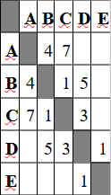
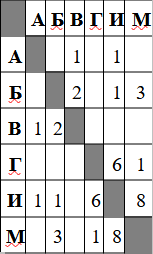
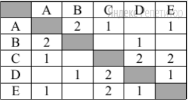
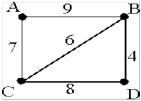

Задание 4. Анализировать простейшие модели объектов
1. Между населёнными пунктами А, В, С, D, Е построены дороги, протяжённость которых (в километрах) приведена в таблице:
 Определите длину кратчайшего пути между пунктами А и E. Передвигаться можно только по дорогам, протяжённость которых указана в таблице.Решение.
Найдём все варианты маршрутов из A в E и выберем самый короткий.Из пункта A можно попасть в пункты B, С.
Из пункта B можно попасть в пункты C, D.
Из пункта C можно попасть в пункты B, D.
Из пункта D можно попасть в пункт E.
A—B—C—D—E: длина маршрута 9 км.
A—B—D—E: длина маршрута 10 км.
A—C—B—D—E: длина маршрута 14 км.
A—C—D—E: длина маршрута 11 км.
Самый короткий путь: A—B—C—D—E. Длина маршрута 9 км.Ответ: 9.
2. Иван-Царевич спешит выручить Марью-Царевну из плена Кощея. В таблице указана протяжённость дорог между пунктами, через которые он может пройти. Укажите длину самого длинного участка кратчайшего пути от Ивана-Царевича до Марьи-Царевны (от точки И до точки М). Передвигаться можно только по дорогам, указанным в таблице:
Решение.
Найдём все варианты маршрутов из И в М и выберем самый короткий.Из пункта И можно попасть в пункты А, Б, Г, М.
Из пункта Г можно попасть в пункты И, М.
Из пункта В можно попасть в пункты А, Б.
Из пункта Б можно попасть в пункты В, И, М.
И—А—В—Б—М: длина маршрута 7 км.
И—Б—М: длина маршрута 4 км.
И—Г—М: длина маршрута 7 км.
И—М: длина маршрута 8 км.
Самый короткий путь: И—Б—М. Длина маршрута 4 км. Самый длинный участок этого пути равен 3 км.Ответ: 3.
3. Между населёнными пунктами A, B, C, D, E построены дороги, протяжённость которых приведена в таблице.
Определите длину кратчайшего пути между пунктами A и B, проходящего через пункт D. Передвигаться можно только по дорогам, указанным в таблице.
Решение.
Из пункта A можно попасть в пункты B, С, E.
Из пункта B можно попасть в пункты A, D.
Из пункта C можно попасть в пункты A, D, E.
Из пункта D можно попасть в пункт B, C, E.
Дорога из пункта А в пункт В не подходит, так как нужно пройти через D.A—С—D—В: длина маршрута 4 км.
А—Е—D—В: длина маршрута 3 км.
Ответ: 3.
4. На схеме нарисованы дороги между четырьмя населёнными пунктами A, B, C, D и указаны протяжённости данных дорог.
 Определите, какие два пункта наиболее удалены друг от друга (при условии, что передвигаться можно только по указанным на схеме дорогам). В ответе укажите кратчайшее расстояние между этими пунктами.Решение.
Два пункта считаются наиболее удаленными друг от друга, если длина кратчайшего пути между этими пунктами больше, чем длина кратчайшего пути между любыми другими двумя пунктами.Найдем длины кратчайших путей между каждой парой пунктов:В—С: 6 км.
В—D: 4 км.
С—D: 8 км.
А—В: 9 км.
А—С: 7 км.
А—D: прямого пути нет, рассмотрим разные маршруты:
A—B—D: длина маршрута 13 км.
A—C—D: длина маршрута 15 км.
A—B—C—D: длина маршрута 23 км.
A—C—B—D: длина маршрута 17 км.
Следовательно, кратчайший маршрут из А в D составляет 13 км. Таким образом, наиболее удалены друг от друга пункты А и D, и кратчайшее расстояние между ними составляет 13 км.Ответ: 13.
Примечание.Ответ 4 из-за маршрута B—A—C—D длинной 24 км не подходит, так как два пункта считаются наиболее удаленными друг от друга, если длина кратчайшего пути между этими пунктами больше, чем длина кратчайшего пути между любыми другими двумя пунктами.
5. Между населёнными пунктами А, В, С, D, Е, F построены дороги, протяжённость которых в километрах приведена в таблице.
(Отсутствие числа в таблице означает, что прямой дороги между пунктами нет.)
Определите длину кратчайшего пути между пунктами А и F (при условии, что пере двигаться можно только по построенным дорогам). В ответе укажите только число.
Решение.
найдём длины кратчайших путей из A в F:A—E—C—F=14
A—E—C—B—F=13
A—E—D—C—F=15
A—D—C—B—F=11
A—D—C—F=12
Значит ответ 11Ответ: 11.